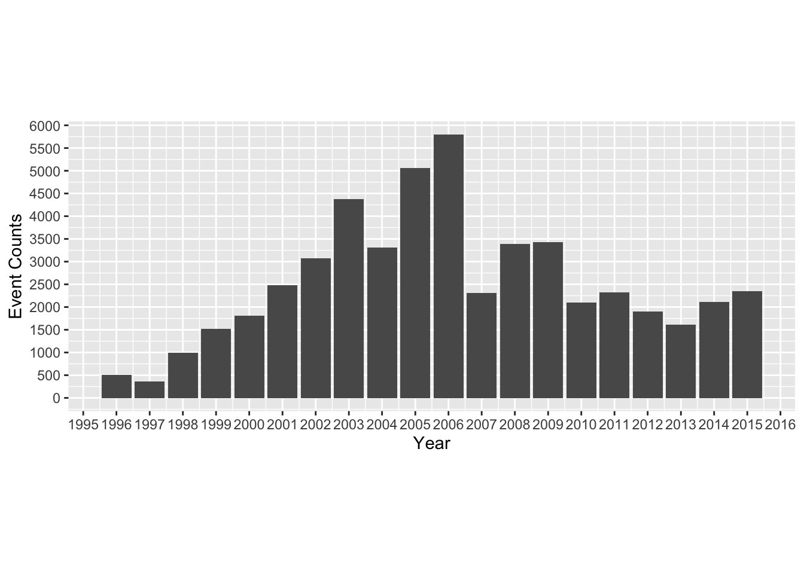

Ritualized Hostility
1 Data Structure
1.1 CAMEO Coding Scheme
To translate CAMEO coding scheme into four more general categories, I rely on the mapping below for recoding.
# Coding Scheme
neutral <- c("010","011","012","013","014","015","016","017","018","019","020",
"022","023","025","026","027",
"211", "212", "213", "214", "231", "233","234", "241","242","243",
"251", "252", "253", "256")
ver_coop <- c("030", "031", "032", "033", "035", "036", "037", "038", "039",
"040", "041", "042", "043", "044", "045", "046", "050", "051",
"052", "053", "054", "055", "056", "057",
"311", "312", "313", "314", "331", "0331", "333", "341", "342", "353")
mat_coop <- c("060", "061", "062","063", "064", "070", "071", "072", "073",
"074", "075", "080", "081",
"811", "831", "833", "841", "842", "861", "871", "872")
ver_conf <- c("090", "100", "101", "102", "105", "106", "107", "111", "112",
"113", "114", "115", "120", "124", "125", "127", "128", "130",
"131", "133", "134", "138", "139",
"1011", "1014", "1031", "1041", "1043", "1213", "1221", "1231",
"1232", "1233", "1241", "1312", "1313", "1621")
mat_conf <- c("141", "1412", "142", "143", "145", "150", "151", "153", "160",
"161", "162", "163", "164", "170", "172", "173", "174", "175", "180",
"181", "182", "183", "185", "186", "190", "191", "192", "193", "194",
"202",
"1711", "1721", "1821", "1822", "1823", "2042")Because the entire volume of ICEWS is huge, I use the latest IECWS data (2017 January) events.2016.20170206134701.tab to test the steps of data manipulation before fully implementing
all the methods.
I did the following tasks:
- Selecte only events which Japan or South Korea was the source or target.
- Eliminate purely domestic events where Japan or South Korea were both the Source Country and the Target Country.
- Recode the
CAMEOCode into 4 categories with the mapping shown above. - Make
category(0,1,2,3,4) a factor variable andtimeas a time variable. - Generate a variable that records the directionality of each event.
1.2 Distribution of Data
1.2.1 Annual Distribution
1.2.1.1 R Parser
There are some issue with the R parser that leads to strange event counts compared to STATA.
1.2.1.2 STATA Parser
By contrast, STATA’s parser has no issue with 2007, as shown in the graph. The remaining analysis will be conducted on the ICEWS data read in STATA.

1.2.2 Distribution of Event Type
One can see the distrubtion of event categories:
| category | n |
|---|---|
| 0 | 6007 |
| 1 | 38992 |
| 2 | 353 |
| 3 | 4421 |
| 4 | 1031 |
| 5 | 19 |
While in events each row is an event, I want each row to be a particular date with information of the frequency of an event of a particular type on that date.
1.3 Daily & Weekly Comparison
1.3.1 Daily Time Series
1.3.1.1 Data Structure
Now I reshape the data frame to make each event category its own coloumn for Time Series analysis.
| time | neutral | ver_coop | mat_coop | ver_conf | mat_conf |
|---|---|---|---|---|---|
| 1996-01-03 | 0 | 2 | 0 | 0 | 0 |
| 1996-01-04 | 0 | 0 | 0 | 0 | 0 |
| 1996-01-05 | 0 | 0 | 0 | 0 | 0 |
| 1996-01-06 | 0 | 0 | 0 | 0 | 0 |
| 1996-01-07 | 0 | 0 | 0 | 0 | 0 |
| 1996-01-08 | 1 | 0 | 0 | 0 | 0 |